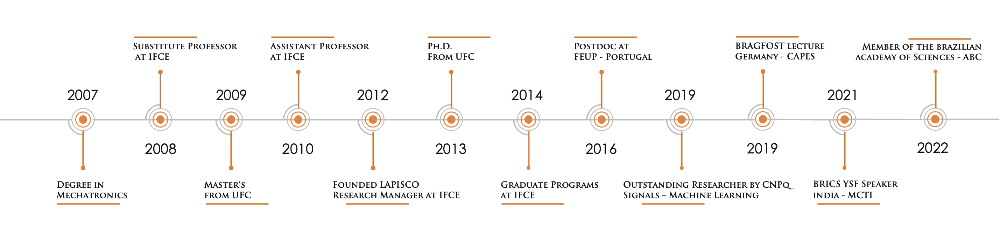

About
I am motivated by challenges that drive my personal growth.
I have immersed myself in the world of programming, dedicating myself to studying cutting-edge technologies and constantly seeking to learn and stay up-to-date. In 2007, I focused on programming in C/C++ for embedded systems, mobile robotics, automation, and other portable mobile systems. During that time, an opportunity presented itself to develop computer vision systems for the first Brazilian tablet running Android. I worked on this project, developing computer vision solutions from scratch for the automotive sector and optimizing them for a device with limited processing capacity. My work included License Plate Recognition and Lane Detection Wall Street. This experience ignited my passion for the field, and I went on to pursue a master's degree in computer vision, specializing in medical diagnosis. This research area enabled me to obtain a master's degree in 2010, a doctorate in 2013, and a post-doctorate in 2016 in Teleinformatics Engineering.
While studying and working on projects in C/C++ involving machine learning and computer vision, I also became a professor at IFCE in 2008. Attracting motivated students seeking my guidance, I prioritized hands-on learning with theoretical support, creating an engaging learning process that ultimately led to the establishment of LAPISCO in 2012. Our potential quickly drew interest from private enterprises and public entities seeking to leverage our expertise in ML and CV to address a wide range of needs and audiences. These included surveillance, security, medical aid, video analytics in industry and embedded in vehicles, prediction of solar and wind energy production, personal and corporate credit analysis, and numerous other data analyses and visualizations. As demand for machine learning solutions grew, we adopted Python to accelerate the delivery of solutions for major corporations and departments in Brazil and worldwide, building expertise in areas such as Embedded Systems, cloud computing, big data, and edge computing.
While I enjoy my work, I also value my life outside of it, especially spending time with my daughter and wife. This drives me to seek creative and efficient ways to boost productivity, meet deadlines, and achieve goals in less time at work. I find that having fulfilling experiences outside of work motivates me to return to work with renewed energy and tackle new challenges.
I look forward to encountering novel technologies and challenges. Do you have any to share? Send me a message.
Send me an email to pedrosarf@ifce.edu.br or follow me on my social media bellow: